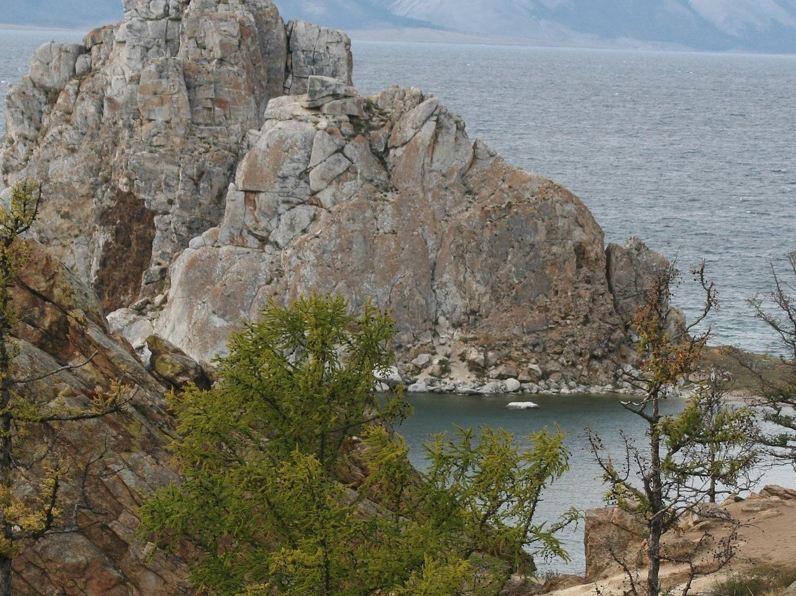

Открой для себя Россию
Российские регионы представляют собой невероятное многообразие культур, природных ландшафтов, этнических и экономических особенностей,
создающих уникальную мозаику страны. От обширных просторов Сибири с её самобытными культурами до величественных гор Кавказа и арктических пустынь Севера, каждый регион обладает своей неповторимой атмосферой, историей и природными богатствами. Это разнообразие делает Россию одной из самых многогранных стран мира, предлагая бесконечные возможности для исследования и понимания её уникального культурного и природного наследия.
Россия простирается от умеренных широт до арктических зон, что обусловливает широкий спектр климатических условий и ландшафтов.
В России проживают десятки различных народов, каждый со своими языками, традициями и обычаями. Национальные республики, такие как Татарстан или Бурятия, сохраняют свои уникальные культурные коды и языки. Даже в пределах одного региона можно найти множество уникальных субкультур, сформированных веками истории и взаимодействием народов.

Куда поехать?
Золотое кольцо России

Историческая значимость Золотого кольца заключается в сохранении уникальных памятников древнерусской культуры, архитектуры и зодчества, являющихся колыбелью русской государственности и православия. Основные города маршрута: Сергиев Посад, Переславль-Залесский, Ростов Великий, Ярославль, Кострома, Иваново, Суздаль и Владимир.
Узнать больше о Золотом кольце
Озеро Байкал

Уникальность природы Байкала заключается в том, что это самое глубокое озеро в мире, обладающее крупнейшими запасами пресной воды и уникальной экосистемой с множеством эндемиков, таких как байкальская нерпа. Здесь можно заниматься активным туризмом круглый год: летом — ходить в походы, кататься на велосипедах и квадроциклах, а зимой — кататься на собачьих упряжках и снегоходах по льду или исследовать ледяные пещеры. Также на Байкале можно посетить исторические и культурные объекты, включая этнографические музеи и древние петроглифы, а также попробовать блюда бурятской кухни.
Узнать больше о Байкале
Камчатка
Камчатка — это край активных вулканов, таких как Ключевская Сопка, Мутновский и Горелый, и уникальных гейзеров, особенно в знаменитой Долине гейзеров в Кроноцком заповеднике. Дикая природа Камчатки представлена разнообразным животным и растительным миром, горячими источниками, ледниками и вулканическими ландшафтами, которые привлекают туристов своей красотой и мощью.
Узнать больше о Камчатке
Кавказские Минеральные Воды

Регион Кавказские Минеральные Воды (КавМинВоды) – это курортная зона, известная своими лечебными минеральными водами, которые применяются для питьевого лечения и бальнеологических процедур, таких как ванны. Регион славится разнообразием вод – от углекислых нарзанов до хлоридно-гидрокарбонатных вод Ессентуки. Воды используются для лечения заболеваний желудочно-кишечного тракта, обмена веществ, сердечно-сосудистой системы и многих других недугов.
Узнать больше о КавМинВодах